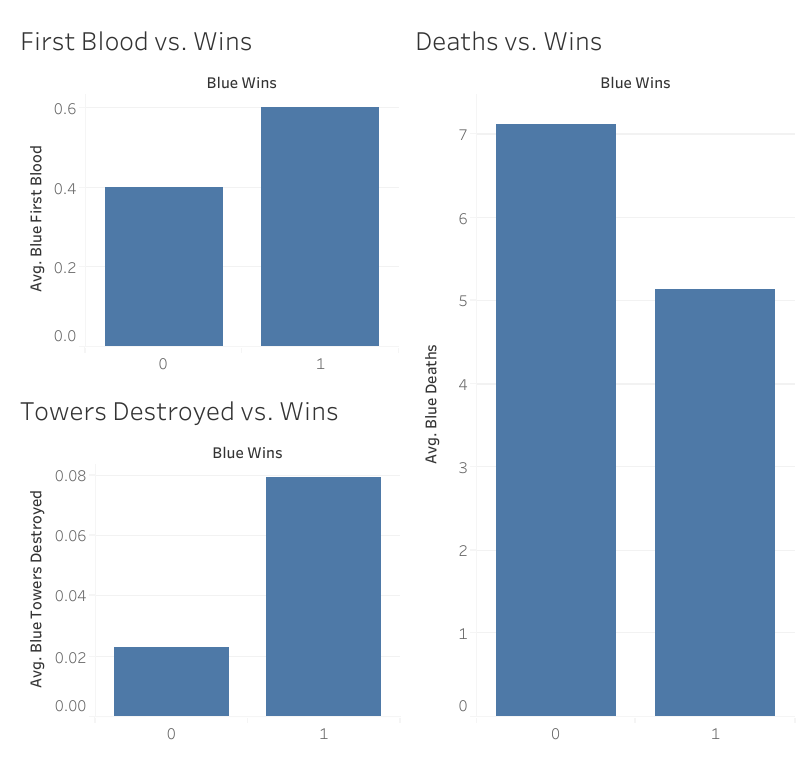
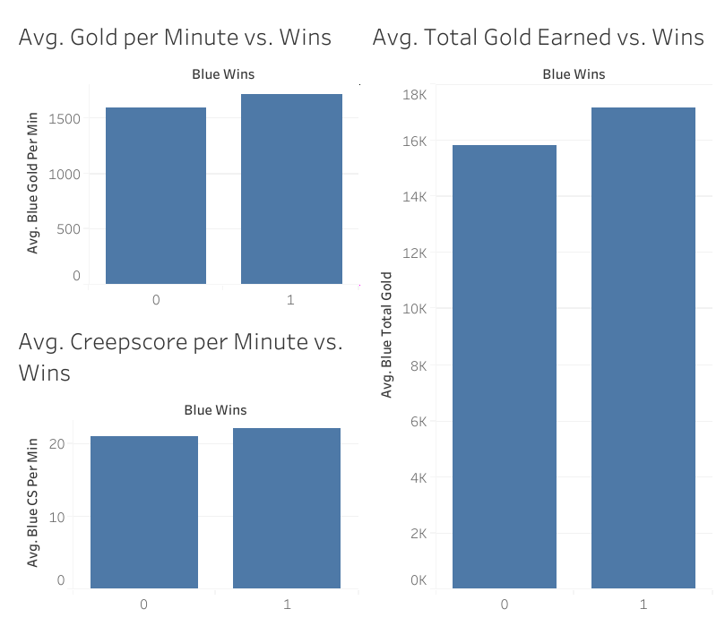

Data with Strong Relationships to Winning
With these variables, it is plain to see that there is a stark contrast between the average win and the average loss. This makes them useful variables upon which to train our machine learning program. It is also worth noting that "Deaths vs. Wins" shows a negative correlation, though this is still just as useful.
Data with Weak Relationships to Winning
Unlike the previous visual, these variables show little difference between wins and losses. As a result, the data from these variables is very poor for machine learning.